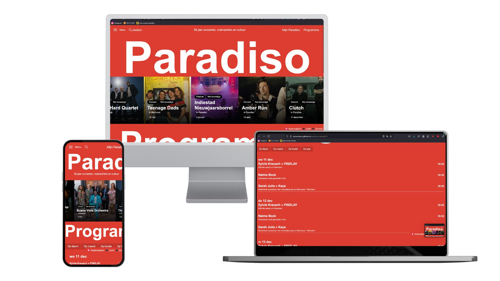
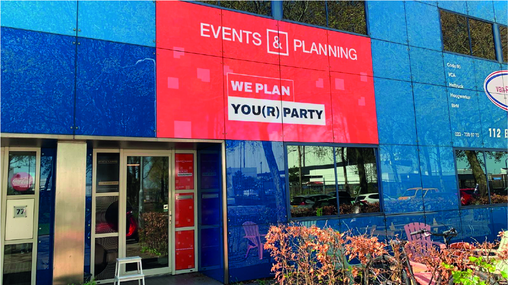
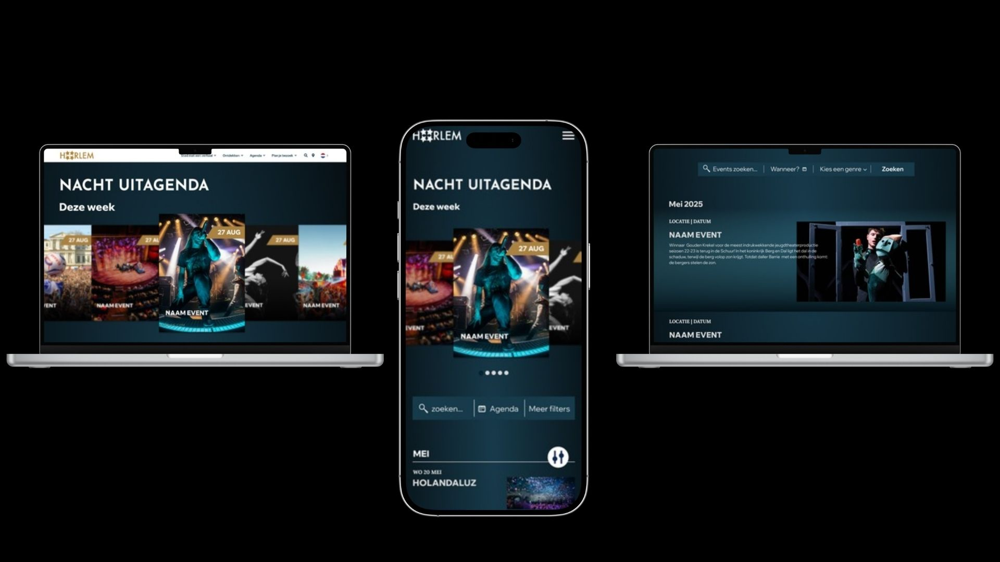
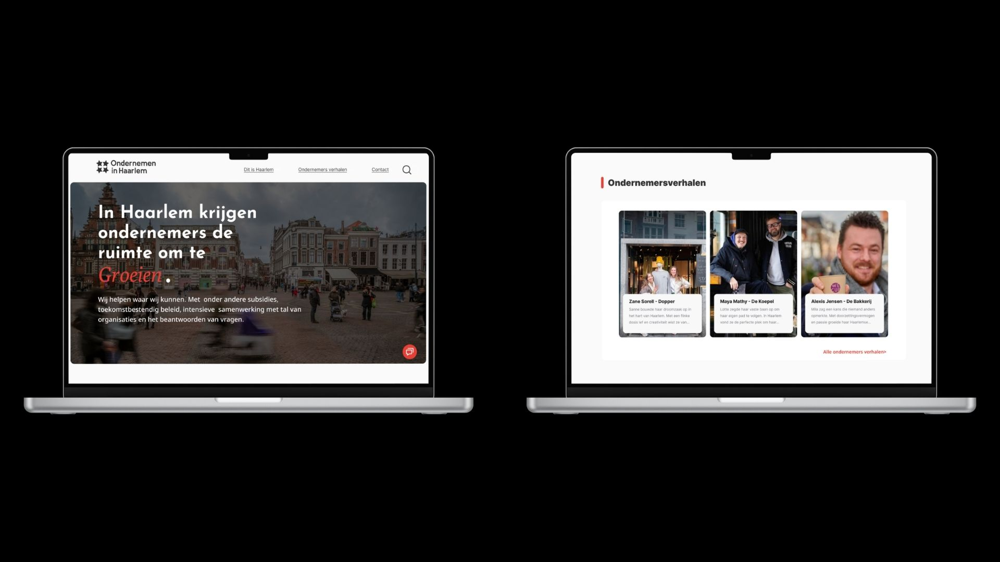

Projecten
Paradiso Website
Twee pagina's van de Paradiso-website nagebouwd met Vanilla HTML, CSS en JavaScript, met focus op semantische code, toegankelijkheid en responsiviteit.

Dé Shotjesbar
Conceptuitwerking voor een mobiele shotjesbar voor evenementen.

Events & Planning
Creatief en productiewerk voor evenementenbureau Events & Planning. Van ontwerpconcept tot uitvoering op locatie.

KNMI
UI/UX design voor het KNMI: dashboardinterfaces, data- en API-weergaven, interactieve kaartcomponenten en beheerderstools.

Haarlem Marketing
UX/UI design bij Haarlem Marketing. Webpagina's herontworpen voor Visit Haarlem, van onderzoek tot werkend Figma-prototype.

Ondernemen in Haarlem
UX/UI design voor een platform voor ondernemers in Haarlem, in opdracht van Haarlem Marketing.

Over mij
Ik leer het snelst door te doen, en hou van projecten waar ontwerp en uitvoering samenkomen.
Ik ben Pleuni, vierdejaars student van de opleiding CMD op de Hogeschool van Amsterdam. Ik heb een brede interesse in UX, conceptontwikkeling en creatieve uitvoering. Van gebruikersonderzoek en prototyping in Figma tot creatieve concepten. Ik pak dingen breed op en leer het snelst door te doen.
Ik hou van nieuwe dingen en onbekende omgevingen. Zo heb ik veel gereisd en een minor in filosofie afgerond in Istanbul. Vijf maanden in een onbekende stad, in een vakgebied buiten mijn comfortzone. Dit soort ervaringen, zoals werken in een internationale omgeving, geven mij frisse energie en inspiratie. Snel schakelen en open staan voor andere perspectieven.
Ik zoek een plek waar ik kan bijdragen en blijven leren. Ik werk goed zelfstandig, maar waardeer begeleiding en feedback om verder te groeien.

Laten we samenwerken.
Open voor werk en nieuwe uitdagingen. Stuur me gerust een bericht.
Pleuni.brans@gmail.com